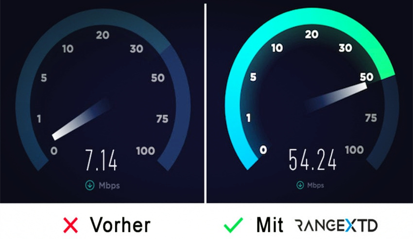
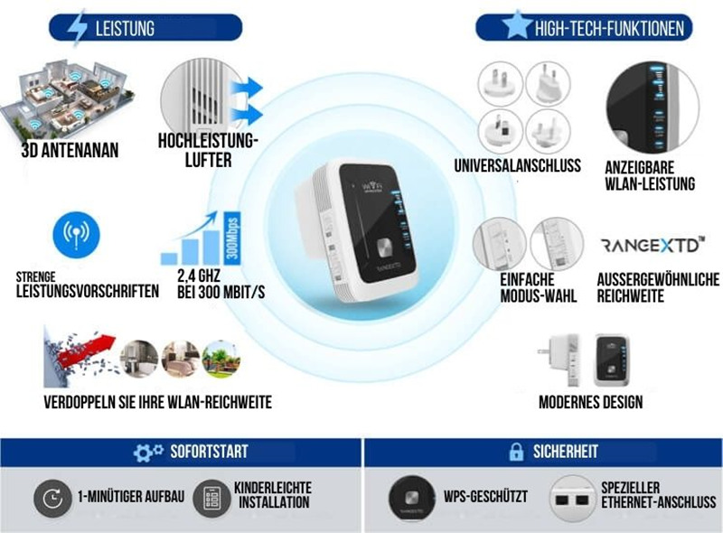
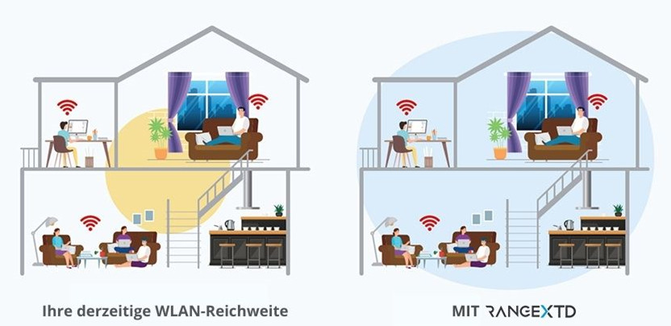
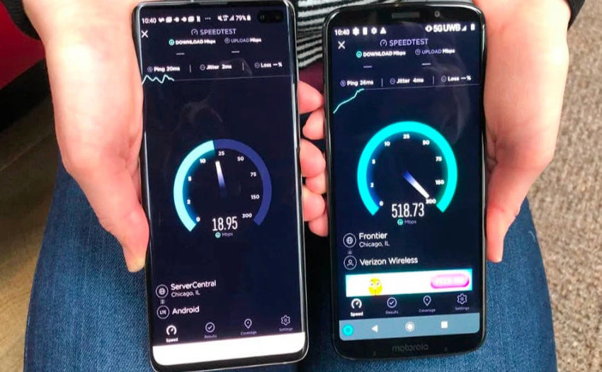

Erfahren Sie wie Sie schnelles Internet bekommen, ohne einen Cent mehr an Ihren Internetanbieter zu zahlen...
Mit diesem Trick verbessern Sie Ihr WLAN dramatisch!
Jeder kennt es und gerade jetzt im Homeoffice ist es besonders ärgerlich: Langsames Internet, lange Ladezeiten, stockende YouTube / Netflix Videos, unterbrochene Videokonferenten, trödelnde Downloads. Auch in der Freizeit beim Online Gaming kommt es zu Verzögerungen durch hohe Pings.
In 99% der Fälle liegt das Problem nicht an Ihrem PC - und noch weniger an Ihnen. Sie müssen es nur ausbaden. Schuld ist das WLAN bzw. Ihr Internetanbieter.
Internetanbieter drosseln Ihre Geschwindigkeit - und das mit Absicht!
Warum fragen Sie sich? Die Antwort ist ganz einfach. Sie haben die Hoffnung, dass Sie, wenn Sie sich lange genug ärgern, auf einen teureren Tarif wechseln und damit mehr Geld bezahlen. Was sich sehr unfair anhört, ist leider die Realität in unserem Land. Aber damit ist nun Schluss.
Zwei Technik Profits aus München, die als angestellte Programmierer bei einem Internetanbieter arbeiteten, kündigten ihren Job, als sie mitbekommen haben, dass ihr Arbeitgeber die Internetgeschwindigkeit seiner zahlenden Kunden absichtlich begrenzt. Das wollten und konnten sie nicht unterstützen. Kurzerhand wollten Sie den Leuten etwas zurückgeben und entschlossen sich dazu, eine Lösung für das Problem zu entwickeln. Ihr Ziel war es, die Drosselung der Internetgeschwindigkeit zu vernichten und gleichzeitig das WLAN Signal im Haus zu verstärken. Damit wollten sie erreichen, dass die Menschen überall und in jedem Winkel ihrer Wohnung volle Internet-Maximalgeschwindigkeit erreichen können.
Grundlage des Internets in Privathaushalten ist der sogenannte Router. Der Router ist, neben dem Modem, Voraussetzung, um eine Internet-Verbindung herstellen zu können. Der Router erhält die vom Internetprovider gelieferten (und anschließend vom Modem übersetzten) Daten, um diese als Internet-Signal an andere Endgeräte im Netzwerk (Computer, Handy, Laptop, Playstation etc.) – via WLAN (oder LAN-Kabel) – weiterzuleiten.
Der RangeXTD Adapter wird hier einfach in die Steckdose gesteckt und verstärkt dann das Signal vom Router um ein vielfaches, sodass sämtliche Übertragungsverzögerungen verhindert werden. Gleichzeitig blockiert das Gerät die Weiterleitung von Verbrauchsdaten an den Internetanbieter und macht so eine Geschwindigkeitsdrosselung unmöglich!

Für Sie bedeutet das: Um diese bahnbrechende neue Erfindung zu nutzen, brauchen Sie keinerlei technische Kenntnisse. Alles, was Sie tun müssen, ist dass Gerät in die Steckdose zu stecken. Der Rest passiert ganz automatisch und das Gerät richtet sich selbst innerhalb von Sekunden ein.

Unser Team hat den RangeXTD im Detail auf Herz und Nieren geprüft und wollte rausfinden, wie sehr sich die Internetgeschwindigkeit damit erhöhen kann. Das Gerät ist derzeit mit einem Rabatt von 50% für nur 49,99€ erhältlich und somit sehr günstig. Das war den Erfindern sehr wichtig, sie wollten sicherstellen, dass jeder von ihrer Erfindung profitieren kann. Nach Bestellung hat es nur 2 Tage gedauert, bis das Gerät geliefert wurde.
Mehrere unserer Mitarbeiter testeten das Gerät zu Hause und im Büro für jeweils 1 Woche.
Technikmagazine schreiben, dass das Gerät sofort nach dem Einstecken in die Steckdose eine massive Verbesserung liefert. Unsere Mitarbeiter waren erstaunt, dass sie plötzlich in jedem Raum volle Geschwindigkeit im Speedtest nachweisen konnten.
Alle waren sich einig, dass sie das Gerät nicht mehr hergeben möchten. Sie haben die 49,99€ an die Firma gezahlt und die Geräte behalten. Die Ergebnisse waren sehr beeindruckend. Der Speed-Test zeigte VOR der Nutzung des Gerätes lediglich im Schnitt 18 Mbit an. Mit Nutzung sprang er dann sofort auf über 500 Mbit! Das Internet hat sich somit vervierfacht und es kam endlich die Leistung an, für die auch gezahlt wird!
Die Anwendung ist kinderleicht, das Gerät in die Steckdose stecken und los geht's.

Im Vergleich zwei Smartphones. Links im normalen WLAN, rechts im WLAN mit RangeXTD.
* Unschlagbares Preis/Leistungs Verhältnis
* Kinderleichte Einrichtung/Installation
* Mit jeder WLAN Verbindung kompatibel
* Ideal für große Gebäude und dicke Wände
* 30-Tage Geld zurück Garantie
* Sehr sicher durch Verschlüsselung des Signals
Immer mehr Menschen entdecken, wie großartiig der RangeXTD ist, um ihre Internetprobleme ein für alle mal zu lösen.
Die Nachfrage steigt und die Vorräte sind begrenzt, daher sollten Sie die offizielle Webseite besuchen, um noch einen RangeXTD zu erhalten. Wir wissen nicht, wann dieses Produkt wieder auf Lager sein wird, also ist jetzt der richtige Zeitpunkt, um es zu kaufen, solange es noch verfügbar ist.
Seitdem der RangeXTD Wifi Booster im Fernsehen, im Radio (zu hören) und im Internet überall zu sehen ist, wurde eine unglaubliche Menge an Aufmerksamkeit erzeugt. Inzwischen wurden bereits mehr als 4 Millionen Geräte (in der ersten Woche) verkauft.
Sonderangebot: Aufgrund dieser Beliebtheit und all den positiven Rückmeldungen ist das Start-up-Unternehmen so sehr vom RangeXTD Wifi Booster überzeugt und bietet als Dankeschön einen einmaligen Erstkäuferrabatt in Höhe von 50% für unsere Leser an.
Und wenn Sie mit RangeXTD, nicht zufrieden sind, gibt es eine 30-Tage-Geld-zurück-Garantie!
Die Leute schwärmen von RangeXTD...